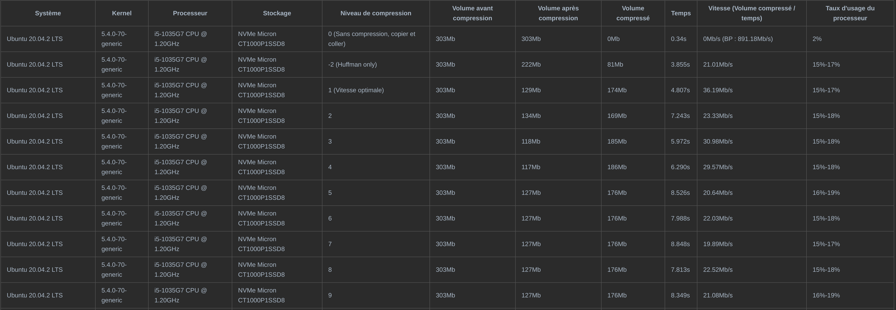

使用简单的改进型RANSAC算法和高速数据读取函数对.ply点云文件进行平面分析
需求：Go语言，对点云文件，RANSAC，最小二乘拟合算法的基本了解
使用一种改进的RANSAC算法对点云文件进行分析并得到其中所含的平面数量和每个平面的一般式方程 (ax + by + cz = d)。同时开发了原生Golang的点云文件读取和写入程序，并进行了性能优化。
1. 环境准备
这里使用通过Intel深感设备获得的，不含有纹理信息的.ply点云文件作为程序的输入。如果使用其它方式获得的数据，由于header头文件和数据存储格式的差异，可能需要对程序进行一定的调整。

可以看到，与头文件不同，数据主体部分以二进制的方式存储，且点与点之间没有空格或换行符。读取文件时，先对头文件进行语义分析并提取相关信息，再对数据主体进行读取。
2. 核心算法
2.1 起始
随机采样一致（Random SAmple Consensus）的实质是随机选取一些能够建立所需模型的样本点，构建模型，并判断该模型是否满足需求，循环重复直至满足退出条件。这里的目的是从点云中拟合平面，所以取三个随机点，并计算平面。
首先，从点云中选取一定数量的子集作为平面的候选点。为了在重复迭代时节省时间，这里使用原数据的一个随机子集进行计算，减少计算量。子集的点的数量将影响计算速度。
// pick a batch of n vertices randomly from the vertex slice
vertexBatch := make([]plyfile.VertexMono, 0)
indexBatch := make([]int, 0)
for {
indexRandom := r.Intn(len(vlist))
// check if this vertex is already chosen. If not, append the vertex and its index to the batch
if mymath.ExistIntList(indexBatch, indexRandom) {...}
vertexBatch = append(vertexBatch, vlist[indexRandom])
indexBatch = append(indexBatch, indexRandom)
// end condition
if len(vertexBatch) == volumeBatch {...}
}
2.2 RANSAC迭代
随机选取三个点并形成平面，计算上一步的子集中的所有点和此平面的距离，如果距离小于给定值则记为内点，否则记为外点。如果内点的数量达到一定比例，则认为此平面存在，放入验证组。如果没有达到此比例，则重新选择三个点并计算。如果达到一定迭代次数仍未找到拥有内点的数量达到一定比例的平面，则返回拥有内点数量最多的平面。
// pick 3 vertices randomly
p1 := 0
p2 := 0
p3 := 0
// check if the 3 vertices are different one from another
for {...}
// calculate the inlines for the plane formed by these 3 vertices (if the distance to the plane is inferior to the given threshold, this point would be regarded as inline) and take the score
p := New_p_by_verticesMono(vlist[p1], vlist[p2], vlist[p3])
for _, vertex := range vlist {
if mymath.DistPointPlane(vertex.Ply_x, vertex.Ply_y, vertex.Ply_z, p.A, p.B, p.C, p.D) < minDistance {...}
}
NumIteration += 1
// update the score (inline rate). If there is a higher score, note down the plane and 3 vertices which forms it
score := InlineCount / float64(n)
if score > highscore {...}
// quit condition : the high score surpass the given parameter, or the number of iteration reach the maximal given in parameter too
if NumIteration > minNforLoop && highscore > minScore || NumIteration >= maxNforLoop {...}
}
2.3 全局拟合
计算上一步中得到的平面到所有点的距离，将小于给定距离的点记为全局内点，使用所有全局内点通过最小二乘法拟合一个新的平面，并将此平面放入平面池，同时将全局内点移出下次迭代使用的数据集。
// Fit several points to x plane, using the least square method by solving a linear system Ax=b
. A : matrix of the size n rows and 3 columns. Rows are (xi, yi, 1) in which xi and yi are coordinates x and y of the points
A := mat.NewDense(n, 3, nil)
// B : matrix of the size n rows and 1 columns, (zi), the coordinates z of the points
b := mat.NewDense(n, 1, nil)
// initializing
for i := 0; i < n; i++ {
A.Set(i, 0, vlist[i].Ply_x)
A.Set(i, 1, vlist[i].Ply_y)
A.Set(i, 2, 1)
b.Set(i, 0, vlist[i].Ply_z)
}
// compute : A * x = b --> ATA * x = AT * b --> x = (ATA)^-1 * AT * b
AT := A.T()
// multiply A by AT at the left side to prepare for the inverse
var ATA mat.Dense
ATA.Mul(AT, A)
// compute the inverse
var ATAInv mat.Dense
err := ATAInv.Inverse(&ATA)
if err != nil {
log.Fatalf("A is not invertible: %v", err)
}
var ATAInvAT mat.Dense
ATAInvAT.Mul(&ATAInv, AT)
var X mat.Dense
X.Mul(&ATAInvAT, b)
P := New_p(X.At(0, 0), X.At(1, 0), -1, X.At(2, 0))
return P
2.4 重复检测
检测是否存在重复的平面。对于所有平面池内的平面，两两计算夹角，如夹角小于给定值，则视为平行，计算平面距离，如再小于给定值，则确认重复。使用两平面所有的内点以最小二乘法拟合出新的平面，替代两平面放入平面池。
// check that if the new plane belongs to the same planar facade as one of the planes already obtained. If it is the case, mix the vertices and re-adjust the two planes using least square method
if len(planes) > 0 {
for index, planeObtained := range planes {
// first check : if the angle formed by the two planes are inferior to the given value
// second check : if the average distance from the points forming the old plane and the new plane is inferior to the given value
if mymath.VectorsAngle32(planeObtained.A, planeObtained.B, planeObtained.C, newP.A, newP.B, newP.C) < maxAnglePlanes && planeObtained.DistAvrPointPlaneMono32(vetexInline) < 4 * maxDistance {...}
}
}
// if vetexInline != nil (empty slice) means that no similar planes found, we add the new plane to the slice. Otherwise there was a similar plane
if vetexInline != nil {...}
// remove the inline points from the original slice, color these vertices and move them to a new slice to prepare for the painting
for i, index := range indexInline {
vlist[index], vlist[len(vlist) - 1 - i] = vlist[len(vlist) - 1 - i], vlist[index]
}
vlist = append(vlist[:0], vlist[0:len(vlist) - inlineCount]...)
2.5 退出条件
迭代以上所有步骤，直到迭代次数大于给定值或剩余外点数量小于给定值，返回平面数量，所有平面方程和剩余外点数量。
// decide whether the iteration continues
numIter++
if len(vlist) < maxVtoQuit || numIter > iterMax {
ifContinue = false
}
return planes, len(planes), verticesOfPlanes
2.6 参数
主要参数如下，需要根据点云的类型手动调整。
func PlaneMonoConsecRANSAC32(
vlist []plyfile.VertexMono, //所有的点（全集）
maxDistance float32, //平面与内点的最大距离
minScoreforRAN float32, //平面的内点在子集中的最低比例
minVforPlane int, //一个平面在全集中最低内点数量
maxAnglePlanes float32, //平行平面的最大夹角
maxVtoQuit int, //程序结束时不属于任何平面的点的最大数量
iterMax int, //程序结束前的最多迭代次数
volumeBatch int //构成子集的点的数量
) ([]Plane32, int, [][]plyfile.VertexMono)
例如 ：
Planes, numPlanes, _ := calculator.PlaneMonoConsecRANSAC32(vlist, 0.003,
0.1,
500,
0.1,
50,
80,
500)
3. 数据读取
在准备数据的读取程序时，我们发现，现有使用Golang的.ply点云读取算法是基于cgo的，使用的时调用c语言库进行编译，在代码可读性，和易用性上作的都不是很好。语言间的互相调用也会损失性能，编写和使用方式都非常不优雅。于是我决定开发原生基于Golang的.ply点云读取程序。
3.1 语法分析
语法分析的作用主要在于从headers头文件提取有用的信息，例如二进制编码方式，点的数量，点的数据构成和数据类型，面的数量等等。这里的语法分析器可以识别任意构成的头文件，只要其遵循基本.ply文件的headers的语法。语法分析的核心代码如下。
for _, i := range lines {
split := strings.Fields(i)
switch split[0] {
// define the format
case "format":
version, _ = strconv.ParseFloat(split[2], 64)
switch split[1] {
case "ascii":
file_type = PLY_ASCII
case "binary_little_endian":
file_type = PLY_BINARY_LE
case "binary_big_endian":
file_type = PLY_BINARY_BE
}
// add comment
case "comment":
comments = append(comments, i[8:])
// add obj_info
case "obj_info":
if len(split) > 1 {
for i := 1; i < len(split); i++ {
obj_info = append(obj_info, split[i])
}
}
// add a new element
case "element":
// if we meet a new element and we have edited the properties of an element : we pack this element and add it in to the slice
if prop_edited == true {
elems = append(elems, *New_element(ele_name, ele_num, props))
prop_edited = false
props = nil
}
ele_name = split[1]
ele_num, _ = strconv.Atoi(split[2])
case "property":
// if this line describes a property list : the second keyword will be "list", the third keyword will describe the type of first data (length of the list) and the fourth keyword for the rest data
var isList, count, typ int
var name string
if split[1] == "list" {
isList = 1
count = TypeConverter(split[2])
typ = TypeConverter(split[3])
name = split[4]
} else {
isList = 0
count = 0
typ = TypeConverter(split[1])
name = split[2]
}
prop := New_property(name, typ, typ, 0, isList, count, count, 0)
props = append(props, *prop)
// indicate whether the property is modified
prop_edited = true
case "end_header":
// we pack the last element and add it in to the slice
elems = append(elems, *New_element(ele_name, ele_num, props))
}
}
3.2 文件读取
众所周知，.ply文件存在两种编码方式，即ASCII与二进制。前者可以直接作为数字被读取，而后者需要经过解码函数作为二进制输出。由于目标文件的编码方式为二进制，这里只开发了二进制的读取和写入功能。
if name == "vertex" {
// grab vertex elements
for i := 0; i < num_elems; i++ {
plyfile.PlyGetElement(cplyfile, &vlist[i], unsafe.Sizeof(plyfile.VertexMono{}))
vertices = append(vertices, vlist[i])
}
} else if name == "face" {
// grab face elements
for i := 0; i < num_elems; i++ {
plyfile.PlyGetElement(cplyfile, &flist[i], unsafe.Sizeof(plyfile.FaceReading{}))
// extract integers from binary listst and export to a slice of faces
FaceBuf := plyfile.Face{int(binary.LittleEndian.Uint32(flist[i].Vert1[:])), int(binary.LittleEndian.Uint32(flist[i].Vert2[:])), int(binary.LittleEndian.Uint32(flist[i].Vert3[:]))}
faces = append(faces, FaceBuf)
}
}
对于读入的每组数据，根据二进制编码方式（Little / Big Endian）进行解码。
func PlyGetElement(plyfile *PlyFile, element interface{}, size uintptr) {
switch plyfile.file_type {
case PLY_BINARY_LE:
buffbytes := make([]byte, size)
r := bytes.NewReader(buffbytes)
_, _ = plyfile.Fp.Read(buffbytes)
_ = binary.Read(r, binary.LittleEndian, element)
case PLY_BINARY_BE:
buffbytes := make([]byte, size)
r := bytes.NewReader(buffbytes)
_, _ = plyfile.Fp.Read(buffbytes)
_ = binary.Read(r, binary.BigEndian, element)
}
}
程序最终输出一个由顶点构成的切片（数组）和一个由面构成的切片。
3.3 初步测试和性能优化
使用pprof对整个程序进行profiling，我们发现数据读取函数（下图右方的黄色部分）占用了近1/3的总时长，然而这部分代码并没有大量的计算。进一步分析代码，发现程序对与每个点或面的元素都调用了一次解码函数并从硬盘存储设备中读取数据，由于硬盘与处理器之间的bus通信延迟较长，从而产生了大量的无效等待时间。

于是考虑减少从存储设备中读取数据的次数。在新版本中，尝试只调用一次读取函数，读取所有数据至内存，然后再调用解码函数。由于内存与处理器间的通信延迟远低于硬盘，可以节省大量等待时间，预计可以获得较大的性能提升。使用下面的代码重新构造读取函数。
if name == "vertex" {
// read all the vertices
vlisthuge := make([]float32, num_elems * 3)
plyfile.PlyGetElementHuge(cplyfile, &vlisthuge, len(vlisthuge) * 4)
vertices = append(vertices, vlisthuge...)
} else if name == "face" {
// read all the faces
flisthuge := make([]byte, num_elems * 13)
_, _ = cplyfile.Fp.Read(flisthuge)
// decode the integers from the memory
for i := 0; i < num_elems; i++ {
f1, f2, f3 := int(binary.LittleEndian.Uint32(flisthuge[i * 13 + 1 : i * 13 + 5])), int(binary.LittleEndian.Uint32(flisthuge[i * 13 + 5 : i * 13 + 9])), int(binary.LittleEndian.Uint32(flisthuge[i * 13 + 9 : i * 13 + 13]))
faces = append(faces, f1, f2, f3)
}
}
可以看到，使用新的读取函数后，读取数据所占用的时间比例明显降低，整体速度从2,74s提升至1,92s，在没有优化计算部分的情况下获得了42,71%的性能提升。

4. 基准测试
基准测试包含了文件读取部分和数据处理部分，应计划要求，在最后加入了文件压缩函数，使用Golang自带的gzip库进行压缩工作。详细结果如下，经过测试，发现使用3作为压缩比参数能达到最理想的性能（压缩比 / 时间）。
在章节3.3中，通过对数据读取函数的优化，我们有效地提高了函数的运行效率。这里，我们使用qemu模拟了在arm1176处理器上运行的Raspberry虚拟机，探究在较低性能的ARM处理器下该优化可能获得的性能提升。可以看到，在低性能环境下，通过这种方式获得的性能提升可能会更加可观。

5.并发优化
考虑以下场景：数据输入端持续采集并保存数据，由于采集速度远大于数据分析速度，容易处理不完，造成堆积。对于每个点云文件的分析是独立的进程，并不依赖于其它文件，因此在理想状态下可以完美并行化（Amdahl’s Law）。在实际应用中，体现为可以方便地并行处理每个文件，获得性能提升。
if modeProc == 2 {
// modeProc new reader 32 bit
for _, file := range files {
// compose the filename
log.Println(location + file)
// read data
vlist, _ := reader.ReadPLYMono32Huge1(location + file)
// compute planes
Planes, numPlanes, _ := calculator.PlaneMonoConsecRANSAC32(vlist, 0.02, 0.1, 500, 0.1, 6000, 2000, 500)
// output of the data
log.Println("The number of planes detected : ", numPlanes)
for _, i := range Planes {
log.Println(i)
}
log.Println("\n")
go func(file string, location string, wg *sync.WaitGroup) {
defer wg.Done()
errC := Compressor.Compress("/home/liu/Desktop/Stages/gogs/src/dataprocessing/gzoutput/" + file + ".gz", location + file, modeComp)
if errC != nil {
panic(errC)
}
errR := os.Remove(location + file)
if errR != nil {
panic(errR)
}
log.Println("Compressed : ", file)
}(file, location, &wg)
}
}
wg.Wait()
这里使用goroutines进行并发计算，不限制最大的goroutines数量，和waitgroup进行线程同步。在与前文相同的x86平台上进行了基准测试以比较和普通模式下的性能差异。使用相同的处理、压缩参数和数据文件，普通模式下耗时9.186s，并发模式耗时3.860s，加速比约为2,380.
在其他的优化方面，尝试了将全局浮点数类型从64位改为32位以观察在32位Raspberry设备上的性能表现，性能差异极小，怀疑可能是误差。用快速平方根算法替代goNum库内的平方根算法，造成性能损失，也被放弃。
6. 后续工作
RANSAC算法简单易用，便于理解，但是也有其局限性。计算结果在很大程度上依赖于参数的选择和随机选择的数据点的质量，对于单个场景需要重复计算来获得一个收敛于均值的结果。此外，对于复杂场景的处理能力不佳，需要反复调整参数。
可以考虑引入其他算法构建结合体，例如区域增长或平均法向量分析。建议参考OpenCV中类似算法的设计。
7. 参考文献
https://halshs.archives-ouvertes.fr/halshs-00264839/document Automatic segmentation of building facades using Terrestrial Laser Data
http://hhoppe.com/recon.pdf Surface Reconstruction from Unorganized Points